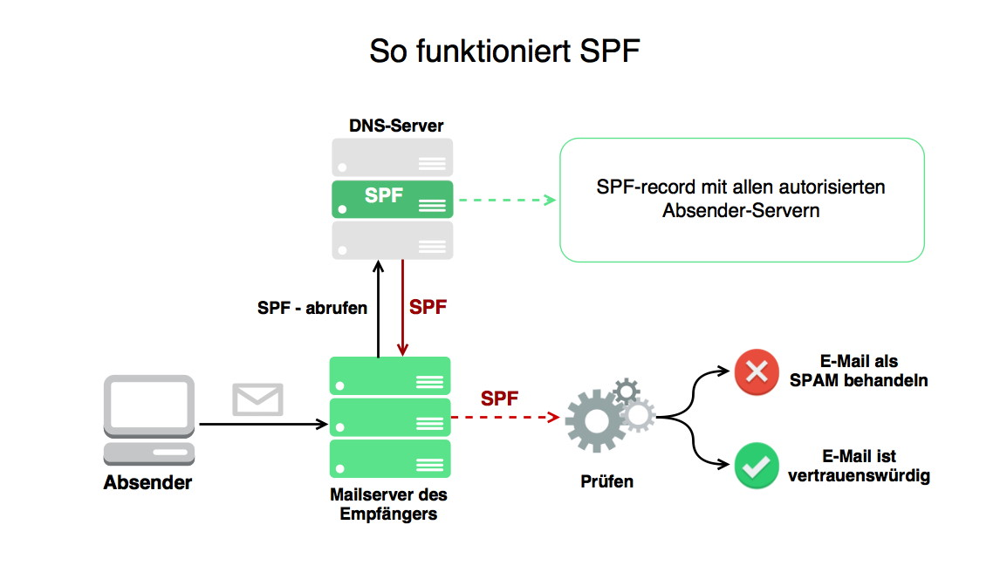

概述
此文章旨在把SPF记录讲清楚，并且加深自己对这方面的理解和印象，学习过程中参考了以下文档：
一篇讲的很清晰的中文博客
一篇讲的很清晰的英文文章
不仅讲了spf，还讲了dkim和dmarc
如何用nslookup和dig来查找spf, dkim, dmarc记录
免费在线工具，功能强大，可以查spf，可以做邮件头分析等等等等
spf是什么
SPF (Sender Policy Framework) 意在防止邮件欺诈行为发生，邮件接收方会借助SPF记录来识别发件服务器是否合法，并根据SPF记录的指示判断是否接收邮件。举个例子，任何人都可以假冒dummy@my-domain.com向其他人发送邮件，对于my-domain.com来说，如果存在spf机制，则收件方可以通过验证spf记录，只有被my-domain.com授权的服务器才能以dummy@my-domain.com作为发件人发送邮件。
工作原理
一图流！ 
- 发件人发送邮件
- 收件人的邮件服务器接收到了邮件
- 收件人的邮件服务器通过发件人的domain，去DNS服务器上获取SPF记录
- DNS服务器返回SPF记录
- 检查发件方发送邮件的服务器IP地址是否被SPF记录授权。如果是，则正常接收邮件。如果不是，则该邮件会被当做spam，具体处理措施也会在spf记录内定义。
如何添加和spf语法
Version
spf记录以'v='开头，这里定义了spf的版本，一般都写spf1，spf1是最常用的，且所有客户端都能识别。
Mechanism
mechanism是spf记录内的对象，用来表示客户端需要去验证的对象。下面列举所有对象，这里听起来比较抽象，结合实际案例一看就明白了。
-
a — 如果发送方IP地址命中域名下任意A记录，则匹配成功
-
ip4 — 指定发送方的IPv4地址或地址段
-
ip6 — 指定发送方的IPv6地址或地址段
-
mx — 如果发送方IP地址命中域名下任意MX记录，则匹配成功
-
ptr — 利用发送方IP做反向解析查找到主机名，如果匹配到spf记录内写的主机名，则匹配成功（不常用）
-
exists — 格式为 exists: domain-spec，接收方将向指定域名发送一条 A 记录查询，如果有任何返回则匹配成功。可以用来做一些比较复杂的校验。（不常用）
-
include — include 的格式为 include: domain-spec，它将会触发一次递归的 SPF 校验过程，让邮件接收方去检查 domain-spec 所设置的 SPF 记录。只有当 domain-spec 的校验结果是 pass 时（注意：soft fail 也不行），本项 mechanism 才会被视为匹配成功。include 机制被期望用于处理「跨行政边界」的情况，即所需要的 SPF 规则被置于不属于本域管辖的域名之下。
-
all — 永远会成功匹配，鉴于这个原因，all 后边的 mechanism 将不会生效。all 一般作为最后一个 mechanism，配合 qualifier 用以配置「默认行为」——如果其他策略全部匹配失败了，本域对这些漏网之鱼的政策是什么。放在spf结尾。
Qualifier
| Qualifier | Result | Explanation |
|---|---|---|
| + | pass | 表示被允许发送的IP，默认此qualifier，可以省略 |
| - | fail | 表示不被允许发送的IP |
| ~ | Soft Fail | 软错误，一个较弱的声明，同样表示不被允许发送 |
| ? | Neutral | 本域的管理者未明确声明该发送方的机器是否通过检查（不常用） |
Modifier
Modifier不是必须项，感觉用处不大，这里跳过不作介绍了。
如何查询spf记录+实例分析
nslookup
nslookup查找spf记录
nslookup -qt=txt csvw.com
得到spf记录
"v=spf1 a mx ip4:167.139.8.201 mx:mail1.csvw.com ip4:222.68.248.2 ip4:222.68.248.5 ip4:58.246.112.99 ip4:58.246.112.101 -all"
该spf记录表示发件方IP命中csvw.com域内任意A记录或任意MX记录或指定的几个IP地址和MX地址即可被允许发送，其余的都被拒绝。
dig
dig查找spf记录
dig csvw.com txt
同样可以得到spf记录
工具
网上有很多在线工具，可以做spf记录查询，文章开头https://mxtoolbox.com/ 此工具可以实现spf查询，非常好用